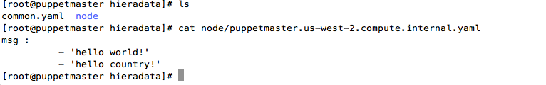
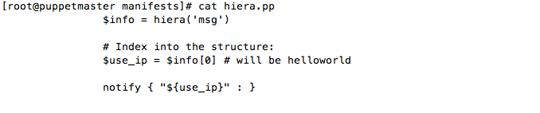
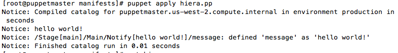
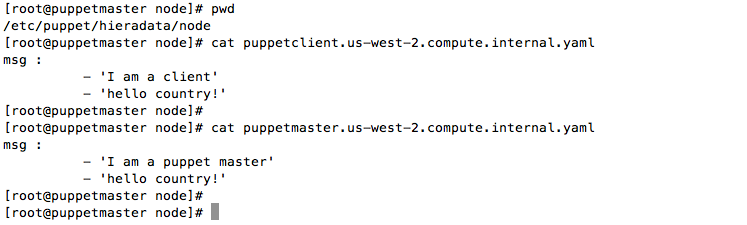
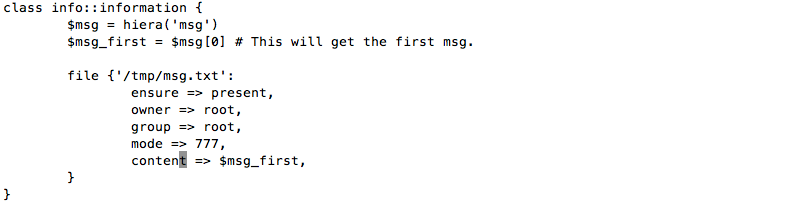
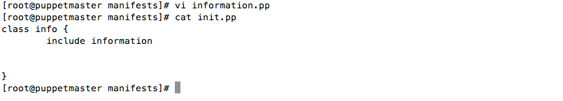
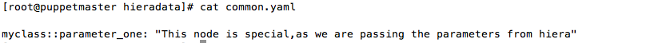
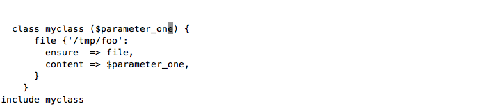
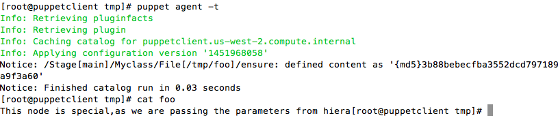

What is Hiera ?
Hiera is a hierarchical value store place, that can be used to provide data or information for your puppet manifests.Puppet 3 and up has hiera installed by default.Hiera makes your data separate from the manifest, so that the modules code remains untouched. This helps your modules to be clean and reusuable.
Shareable data like OS-Specific data can be used in local variable or templates
Private data like SSL key, private ssh key are used in hiera
Hiera can be configured in two different forms 1) YAML => Yaml markup language 2) JSON => javascript object notation
Hiera requires ruby
Hiera structure
Default location where puppet will look for hiera config file
vi /etc/puppet/hiera.yaml
:hierarchy:
- "node/%{::fqdn}"
- environments/%{environment}
- common
- users
:backends:
- yaml # will look for .yaml file only
# we can specify -json file as well
:yaml:
:datadir: '/etc/puppet/hieradata' # will look at this directrory
|--- hiera.yaml
|--- hieradata
| |--- node
| |--- client.example.com.yaml
| |--- hostname.yaml
| |--- hostname2.yaml
|--- manifests
| |-- site.pp
|--- modules -> ../puppet-common/modules/
Explanation:
:hierarchy setting is used to define your own hierarchy of data source(which files to look first and which to look last). 1) Default value: "common" (i.e. a single-element hierarchy whose only level is named “common.” 2) :datadir defines the location of the data source files 3) :backends defines the type of files eg, yaml files or json files. it will also follow the order. If yaml is defined first and json second, it will look for all .yaml files in the data source folder provided by the :datadir settings.
We have created the hieradata directory in the /etc/puppet/ location. Hieradata contains the node directory which will have the .yaml file. For each client machine, we will create the new hostname.yaml file from which manifest will get information.it will only look for matching hostname.
cat /etc/puppet/hieradata/node/pupetmaster.yaml
cat /etc/puppet/manifest/hiera.pp
Testing if the hiera is getting the value from hieradata directroy
puppet apply hiera.pp
Here, hello world value is pulled from .yaml file in node directory
Firstly, Create hiera files in the node directory of hiera directory. Files name should match the hostnme of the client.
Puppet modules has been created under the name of info.
vi /etc/puppet/modules/info/manifests/information.pp
vi /etc/puppet/modules/info/manifests/init.pp
vi /etc/puppet/manifest/site.pp
node 'puppetclient','puppetserver' {
include info
}
Running the puppet agent from the client machine, as well as from the server
[root@puppetclient~]#puppet agent -t
Info: Retrieving pluginfacts Info: Retrieving plugin Info: Caching catalog for puppetclient.us-west-2.compute.internal Info: Applying configuration version '1451966419' Info: /Stage[main]/Info::Information/File[/tmp/msg.txt]: Filebucketed /tmp/msg.txt to puppet with sum 9ec4698c1d5f0055bce476a3fde15d98 Notice: /Stage[main]/Info::Information/File[/tmp/msg.txt]/content: content changed '{md5}9ec4698c1d5f0055bce476a3fde15d98' to '{md5}7b8f2129eadd3cc2aa854ffb55f7ae39' Notice: Finished catalog run in 0.06 seconds
[root@puppetclient~]# cat /tmp/msg.txt
I am a client
Here, when you run the puppet master, it will pull the hiera value based on the hostname.
puppet agent -t
[root@puppetmaster~]# cat /tmp/msg.txt
I am a puppet master
In this example, $parameter's value gets set when `myclass` is eventually declared.
[root@puppetmaster~]# vi /etc/puppet/hieradata/common.yaml
[root@puppetmaster~]# vi /etc/puppet/manifest/site.pp
[root@puppetclient~]# puppet agent -t
Priority(default),Array merge, Hash merge
Sample files
# puppetclient.yaml
msg: A
# common.yaml
msg:
- B
- C
1) A priority lookup gets a value from the most specific matching level of the hierarchy
it will only Return A
2) An array merge lookup assembles a value from every matching level of the hierarchy
Array merge lookup would return a value of [A, B, C].
3) A hash merge lookup assembles a value from every matching level of the hierarchy,then merges the hashes into a single hash
It only works when every value found is a hash and will crash,if any of the values found in the data sources are strings or arrays
#puppetclient.yaml
msg
A : "apple"
#common.yaml
msg:
B : "BOY"
C : "CAT"
it will return the value in the following format {A => "apple",B=>"Boy",c=>"cat"}